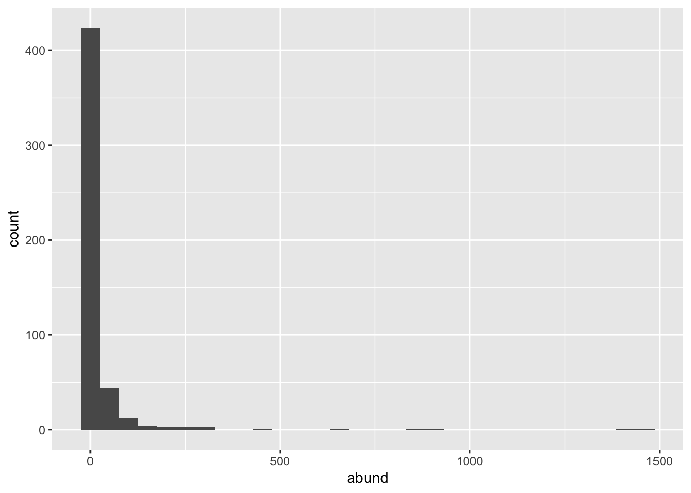

This lab will guide you through building a Poisson log normal model of species abundance using Bayesian methods. You can download the template .qmd file for this lab here:
The template will prompt you to work through the following sections.
36.1 A look at the Poisson log normal
The Poisson log normal is a well established model of the species abundance distribution (SAD). We will use it as the core of our model relating species abundances to fixed and random effects. First let’s gain some intuition about it.
The Poisson log normal says that, for any given species, its mean abundance\(\lambda_i\) will follow a log normal distribution
With that mean abundance, we then say the actual abundance \(y_i\), the number we collect in the field, follows a Poisson distribution with mean \(\lambda_i\)
\[
y_i \sim \text{Pois}(\lambda_i)
\]
Let’s simulate and visualize a few Poisson log normal SADs
lambda <-rnorm(500, 1, 2) |>exp()y <-rpois(length(lambda), lambda)# combine all info into a data.frame for plotting pois_lnorm_sad <-data.frame(mean =1, sd =2, abund = y)ggplot(pois_lnorm_sad, aes(abund)) +geom_histogram()
`stat_bin()` using `bins = 30`. Pick better value `binwidth`.

Figure 36.1
Try 3 more different parameter combinations with new values for \(\mu\) and \(\sigma_\text{sp}\). If you add them to pois_lnorm_sad you can facet by parameter value for a nice final visualization of all 4 parameterizations
36.2 Prepping the data
First read-in and join all data
tree <-read.csv("https://raw.githubusercontent.com/uhm-biostats/stat-mod/refs/heads/main/data/OpenNahele_Tree_Data.csv")clim <-read.csv("https://raw.githubusercontent.com/uhm-biostats/stat-mod/refs/heads/main/data/plot_climate.csv")geo_hii <-read.csv("https://raw.githubusercontent.com/uhm-biostats/stat-mod/refs/heads/main/data/hii_geo.csv")all_dat <-left_join(tree, clim, by ="PlotID") |>left_join(dplyr::select(geo_hii, !(lon:lat)), by ="PlotID")
Next we need to use a split-apply-combine approach to summarize species abundance for each site. We have to do this with more attention to detail than normal because we need to correctly record 0 abundance for species absent from a site. Notice from the SAD simulations we just did that 0 abundance is possible, and even highly probable, for certain parameterizations of the SAD. Rare species are generally very frequent, and this is another thing we’ll need to be cautious about. Too many extremely rare species will be very difficult for our Bayesian model to deal with. Think of it this way: if a species only shows up at one or two sites or a handful of sites, what inference can we draw about that species? None really.
With all that in mind, let’s create our species abundance data
# this data object just holds the names of all species found# at 10 or more sites. We will use it to filter out species# that are too rare to bother modelingcore_sad <-group_by(all_dat, Scientific_name) |>summarize(freq =n_distinct(PlotID)) |>ungroup() |>filter(freq >=10)# now we can create the data for modelingdat_sad <- all_dat |># by first filtering to only spp found at >= 10 sitesfilter(Scientific_name %in% core_sad$Scientific_name) |># then make sp name a factor so we can use `.drop = FALSE`mutate(Scientific_name =as.factor(Scientific_name)) |># `.drop = FALSE` means don't ignore combinations of# `PlotID` and `Scientific_name` that are empty (i.e. 0 abundance)group_by(PlotID, Scientific_name, .drop =FALSE) |>summarize(abund =n()) |>ungroup() |># now join abundance data back to plot-level dataleft_join(select(all_dat, PlotID, ndvi_annual, hii) |>unique()) |># next join to species-level dataleft_join(select(all_dat, Scientific_name, Native_Status) |>unique()) |># remove NAs from explanatory variablesfilter(!is.na(ndvi_annual) &!is.na(hii) &!is.na(Native_Status)) |># finally, scale explanatory variablesmutate(hii =scale(hii)[, 1], ndvi_annual =scale(ndvi_annual)[, 1])
`summarise()` has regrouped the output.
Joining with `by = join_by(PlotID)`
Joining with `by = join_by(Scientific_name)`
ℹ Summaries were computed grouped by PlotID and Scientific_name.
ℹ Output is grouped by PlotID.
ℹ Use `summarise(.groups = "drop_last")` to silence this message.
ℹ Use `summarise(.by = c(PlotID, Scientific_name))` for per-operation grouping
(`?dplyr::dplyr_by`) instead.
That last step of scaling explanatory variables can help with MCMC convergence. What scaling does is makes each variable have a mean of 0 and a standard deviation of 1
mean(dat_sad$ndvi_annual)
[1] -3.859722e-15
sd(dat_sad$ndvi_annual)
[1] 1
mean(dat_sad$hii)
[1] 3.906694e-16
sd(dat_sad$hii)
[1] 1
Putting these variables on the same scale means that the MCMC can move around a parameter space where 1 unit in the hii direction is roughly equivelant to 1 unit in the ndvi_annual direction.
36.3 Modeling a hypothesis
With the data now in hand, what would we like to ask (and hypothesize) about species abundance? Let’s ask whether abundance is related to primary productivity as measured by NDVI and whether human impact interacts with native status to determine a species’ abundance.
Our hypothesis might be that
NDVI increases abundance
human impact decreases abundance
being a native species has no effect
but there is a negative interaction of native status and human impact (native taxa are decrease in abundance with human impact)
As a fixed effects Poisson model for species \(i\) at site \(j\) that looks like
\(I_{\text{native, } i}\) is an indicator function that equals 1 if species \(i\) is native, and equals 0 otherwise. In this way \(b_3 I_{\text{native, } i}\) represents the additional effect of being native relative to \(b_0\) which is the effect of being non-native (recorded as “alien” in the OpenNahele data). Similarly, \(b_4 I_{\text{native, } i} \text{hii}_j\) is the additional slope term added for species that are native.
But we also know our model needs random effects for species and sites. We add those via random terms \(b_{\text{sp} ~i}\) and \(b_{\text{site} ~j}\). So the full model is
The random effects mean that \(\log(\lambda_{ij})\) is normally distributed, or equivalently that \(\lambda_{ij}\) is log normally distributed. Thus we arrive at the Poisson log normal.
The brms code for this model looks like this:
# note: do not run this code, leave the chunk option set to `false`# the mcmc for this model takes a *loooonnnng* time# instead, we'll read-in a saved, previously run model mod_abund_hii_ndvi <-brm(abund ~ ndvi_annual + hii * Native_Status + (1| PlotID) + (1| Scientific_name), data = dat_sad,family =poisson(),prior =c(prior(normal(0, 5), class = Intercept),prior(normal(0, 1), class = b),prior(exponential(1), class = sd) ),chains =4,cores =4,seed =123, iter =5000, warmup =2000, control =list(max_treedepth =15))
A few things to note about this code:
the priors might seem a little too informative at first, but recall that the parameter values we draw from the priors are on a log scale, so sd = 5 on a log scale is really sd = (exp(5) - 1) * exp(5). The prior for slopes might also seem too narrow, but we scaled our explanatory variables to range from roughly -3 to 3. Therefore the slopes will never be large
we need a lot of iterations and a long warmup for this complex model
we also need to allow for a larger max_treedepth. The max_treedepth argument determines how long we let the computer try simulating the ball rolling around the basin of the posterior
Now rather than running that model, we will instead load a saved version of a previous run
Now we can evaluate this model. Refer back to lectures and previous labs to work through the following:
use summary(mod_abund_hii_ndvi) to get a sense of how the MCMC worked via the Rhat and ESS statistics
look at the trace plot for the parameter with the highest ESS and for any parameters that have a suspiciously low ESS (recall: post warmup we have 3000 MCMC samples). In the trace plots, do you see any reason for concern? You will need to specify which parameters you want to make a trace plot for by setting the argument pars equal to the names of your parameters of interest. Recall that brm names parameters with a "b_" prefix. So if you wanted to look at the intercept and interaction terms you would set pars = c("b_Intercept", "b_hii:Native_Statusnative")
look at the autocorrelation plots (with mcmc_acf from bayesplot) for those same parameters, what insights do these plots give you?
do a posterior predictive check on the mean and variance. Do you see any cause for concern?
36.5 Interpreting the model in the context of our hypotheses
Even if there were perhaps some diagnostics that gave us reason to be cautious with this model, let’s still work on interpreting the parameter values as an exercise in understanding models. Look back to our hypotheses, were they supported by this model?
You can quickly assess this by using summary to look at 95% credible intervals. But it is also nice to visualize the histograms of posteriors.
To look at the histograms you will need to pull posterior samples
post_samps <-as_draws_df(mod_abund_hii_ndvi)
Because of the random effects, there are many MANY columns, one for each fixed effect, but also one for each species and site! Looking back at the equations for our model we can count 5 fixed effects:
\(b_0\)
\(b_1 \text{NDVI}_j\)
\(b_2 \text{hii}_j\)
\(b_3 I_{\text{native, } i}\)
\(b_4 I_{\text{native, } i} \text{hii}_j\)
These 5 fixed effects should be the first 5 columns of post_samps. Let’s confirm
Now make one figure where the 5 posterior histograms are stacked on top of each other. You can use plot_grid from the cowplot package, or you can tidy the first 5 columns of post_samps using pivot_longer from the tidyr package.
Finally, what do you conclude? Were our hypotheses supported by the fitted model?